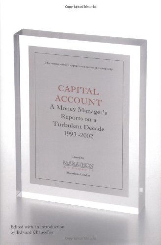

《资本账户》出版于2004年，由英国金融史学家爱德华·钱塞勒（Edward Chancellor）编辑并撰写导言，收录了伦敦资产管理公司马拉松资产管理（Marathon Asset Management）在1993年至2002年间写给客户的投资报告精选。这十年恰好覆盖了现代金融史上最壮观的一轮泡沫的完整周期——从九十年代初的牛市起步，到科技与电信股的疯狂，再到2000年之后的崩塌。与事后复盘的著作不同，这些报告是在事件发生的当时写下的实时判断，读者可以看到一家专业投资机构如何在狂热的顶点保持怀疑，并在早期就识别出科技电信泡沫终将破灭。
贯穿全书的分析框架是马拉松公司著名的"资本周期"（capital cycle）方法。其逻辑并不复杂：当一个行业回报丰厚时，资本便蜂拥而入，带来产能过剩与竞争加剧，行业回报随之下滑；当资本在亏损中撤离、弱者退出、行业整合之后，供给收缩，幸存者的回报又会回升。因此，马拉松偏好的是"资本开支正在下降、股份数量正在收缩、竞争因行业整合而趋缓、需求上升、且估值极具吸引力"的行业，而对资本大量涌入的热门行业保持警惕。钱塞勒在书中写道："长期而言，股价由现金流决定，而现金流主要受竞争环境的影响。"（"Over the long run, share prices are determined by cash flows, which are themselves primarily influenced by the competitive environment."）这一框架把行为金融学、经济学理论与商业分析结合在一起，与华尔街对季度盈利的痴迷形成了鲜明对照。
本书的另一条主线是"股东价值"在九十年代如何被系统性地败坏。报告记录了管理层损害股东利益的种种做法：缺乏正当理由的多元化扩张与帝国建造、稀释老股东的大规模增发、奖励规模而非盈利能力的激励错配，以及在估值高企时仍大举扩张的糟糕资本配置。在泡沫顶峰，书中列举的警号如今读来触目惊心：1999年上市的新股中六成来自科技电信行业，市场估值隐含着未来十年14%的盈利增长，股价上涨几乎全靠估值倍数扩张，而内部人减持却创下纪录。这些实时观察为后人理解泡沫的解剖结构提供了第一手材料。
对中文读者而言，马拉松公司更广为人知的著作是同样由钱塞勒编辑的续篇《资本回报》（Capital Returns，2015年出版，收录2002—2015年的报告），资本周期理论正是通过那本书为大量价值投资者所熟知。《资本账户》是这一思想体系的源头之作，记录了资本周期方法在真实泡沫中的第一次大考。钱塞勒本人著有《金融投机史》（Devil Take the Hindmost），该书曾被《纽约时报》评为年度值得关注的图书，并被《Money》杂志列为六本"不可或缺的投资经典"之一。对于希望理解行业供给面分析、资本配置纪律以及泡沫如何在细节中显形的读者，这本书是资本周期学派不可绕过的起点。